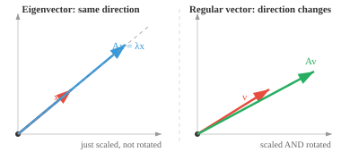
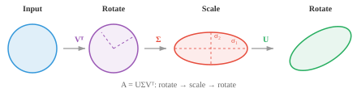

Matrix Decompositions¶
Matrix decompositions break complex matrices into simpler factors for solving systems, computing inverses, and compressing data. This file covers Gaussian elimination, LU, QR, Cholesky, eigendecomposition, and SVD, the algorithms behind PCA, recommender systems, and numerical stability in ML.
-
A matrix decomposition (or factorisation) breaks a matrix into simpler pieces that are easier to work with. Think of it like factoring a number: \(12 = 3 \times 4\) is easier to reason about than 12 alone.
-
We decompose matrices to solve systems of equations faster, compute inverses stably, find eigenvalues, compress data, and understand the geometry of transformations.
-
The most fundamental technique is Gaussian elimination (row reduction). The idea is simple: given a system \(A\mathbf{x} = \mathbf{b}\), use three allowed operations to simplify \(A\) until the answer is obvious.
-
The operations are: swap two rows, multiply a row by a nonzero scalar, or add a multiple of one row to another.
-
For example, to eliminate the first column below the pivot, subtract multiples of row 1 from the rows below:
- The goal is row echelon form (REF): zeros below each pivot (the first nonzero entry in each row), with each pivot to the right of the one above it. The matrix becomes a staircase shape.

-
Going further to reduced row echelon form (RREF) makes every pivot equal to 1 and the only nonzero entry in its column. Every matrix has a unique RREF.
-
Once in triangular form, we solve by back substitution: the bottom row gives the last variable directly, then work upward.
-
This is the foundation that all other decompositions build upon, the goal of decompositions is to reduce a matrix to a triangular form, so we can back substitute and solve for the variables.
-
LU decomposition formalises Gaussian elimination by factoring a square matrix into \(A = LU\) (or \(A = PLU\) with row swaps), where \(L\) is lower triangular and \(U\) is upper triangular.

-
To solve \(A\mathbf{x} = \mathbf{b}\): first solve \(L\mathbf{y} = \mathbf{b}\) by forward substitution (top to bottom), then solve \(U\mathbf{x} = \mathbf{y}\) by back substitution (bottom to top). Two easy triangular solves instead of one hard general solve.
-
The advantage over raw Gaussian elimination is reuse. Once you have \(L\) and \(U\), you can solve for many different \(\mathbf{b}\) vectors without redoing the factorisation.
-
If you need to solve the same system with 1000 different right-hand sides (common in simulations), you factorise once and reuse.
-
When a matrix is symmetric and positive definite (like a covariance matrix), we can do even better.
-
Cholesky decomposition factors it as \(A = LL^T\), where \(L\) is lower triangular. For example:
-
This is roughly twice as fast as LU and is guaranteed to be numerically stable. Think of it as a "square root" of the matrix.
-
If the decomposition fails (a negative value under a square root), the matrix is not positive definite. Cholesky thus doubles as a test for positive definiteness.
-
The eigenvectors of a square matrix \(A\) are the special directions that the transformation only stretches or shrinks, without rotating. The eigenvalue is the scaling factor:

-
Most vectors change direction when multiplied by a matrix. But eigenvectors are special: the output points in the same direction as the input, just scaled by \(\lambda\). If \(\lambda = 2\), the eigenvector doubles in length. If \(\lambda = -1\), it flips direction. If \(\lambda = 0\), it gets squashed to zero.
-
For example, with:
the vector \([1, 0]^T\) is an eigenvector with \(\lambda = 3\) because \(A[1, 0]^T = [3, 0]^T = 3[1, 0]^T\).
-
To find eigenvalues, solve the characteristic polynomial \(\det(A - \lambda I) = 0\). The roots are the eigenvalues. Then substitute each \(\lambda\) back into \((A - \lambda I)\mathbf{x} = \mathbf{0}\) to find the corresponding eigenvectors.
-
Key properties:
- The trace of \(A\) equals the sum of its eigenvalues.
- The determinant of \(A\) equals the product of its eigenvalues.
- Symmetric matrices have perpendicular eigenvectors and real eigenvalues.
- Positive definite matrices have all positive eigenvalues.
- Covariance matrices (which we will encounter in statistics) are always positive semi-definite.
-
Computing eigenvalues via the characteristic polynomial is impractical for large matrices. Instead, iterative methods are used:
-
Power iteration: repeatedly multiply by \(A\) and normalise. Converges to the dominant eigenvector (largest eigenvalue). Simple but only finds one eigenpair.
-
QR algorithm: the workhorse method. Repeatedly decompose and recombine using QR factorisation until the matrix converges to triangular form, revealing all eigenvalues on the diagonal.
-
Inverse iteration: finds the eigenvector closest to a given target value. Useful when you know roughly which eigenvalue you want.
-
For large sparse matrices, Arnoldi and Lanczos iterations exploit the sparsity for efficiency.
-
-
If a square matrix has a full set of linearly independent eigenvectors, it can be diagonalised: \(A = PDP^{-1}\), where \(D\) is a diagonal matrix of eigenvalues and the columns of \(P\) are the eigenvectors.
-
Why is this useful? Diagonal matrices are trivial to work with. Need \(A^{100}\)? Instead of multiplying \(A\) by itself 100 times, compute \(PD^{100}P^{-1}\), and raising a diagonal matrix to a power just raises each entry independently. This turns an expensive operation into a cheap one.
-
An eigenbasis is a basis made entirely of eigenvectors. In this basis, the matrix becomes diagonal and the transformation is just independent scaling along each eigenvector direction. This is like finding the natural coordinate system for the transformation.
-
QR decomposition factors any matrix \(A\) into \(A = QR\), where \(Q\) is orthogonal (its columns are orthonormal) and \(R\) is upper triangular. Think of it as separating the "direction" information (\(Q\)) from the "scaling and mixing" information (\(R\)).
-
The Gram-Schmidt process builds \(Q\) column by column. Take the first column of \(A\) and normalise it. Take the second column, subtract its projection onto the first (to make it perpendicular), and normalise. Repeat for each column. The result is an orthonormal set of vectors.
-
QR decomposition is the engine behind the QR algorithm for eigenvalues. It is also used directly for solving least-squares problems: when \(A\mathbf{x} = \mathbf{b}\) has no exact solution (more equations than unknowns), QR finds the best approximate answer.
-
SVD (Singular Value Decomposition) is the most general and arguably the most important decomposition. Every matrix (any shape, any rank) has an SVD: \(A = U\Sigma V^T\)
- \(V^T\) (\(n \times n\), orthogonal): rotates the input
- \(\Sigma\) (\(m \times n\), diagonal): scales along orthogonal axes (the singular values, non-negative, in descending order)
- \(U\) (\(m \times m\), orthogonal): rotates the output

-
Geometrically, SVD says that every linear transformation, no matter how complicated, is just a rotation, followed by a stretch along the axes, followed by another rotation. A circle becomes an ellipse.
-
The singular values (\(\sigma_1 \geq \sigma_2 \geq \ldots\)) reveal the "importance" of each direction. Large singular values correspond to directions that matter most. The rank of \(A\) equals the number of nonzero singular values.
-
Low-rank approximation: by keeping only the \(k\) largest singular values and zeroing the rest, you get the best possible rank-\(k\) approximation of \(A\). This is how image compression works: a \(1000 \times 1000\) image might need only \(k = 50\) singular values to look nearly identical, compressing it by 20x.
-
SVD also provides the pseudo-inverse: \(A^+ = V\Sigma^+U^T\), where \(\Sigma^+\) inverts the nonzero singular values.
-
While eigendecomposition only works for square matrices, SVD works for any matrix. This is its key advantage.
-
PCA (Principal Component Analysis) uses eigendecomposition (or SVD) for dimensionality reduction.
-
Imagine a dataset with 100 features per sample (vector of dim 100 stacked into a matrix). Many of those features are correlated and redundant.
-
PCA finds the directions along which the data actually varies, letting you keep only what matters.

-
The first principal component (PC1) is the direction of greatest variance.
-
The second (PC2) captures the most variance of what remains, and is perpendicular to the first.
-
If most of the variance lives along just a few directions, you can project the data down to those dimensions and discard the rest with minimal loss.
-
The steps:
- Standardise the data (subtract mean, divide by standard deviation) so all features contribute equally
- Compute the covariance matrix
- Find its eigenvalues and eigenvectors
- Select the \(k\) eigenvectors with the largest eigenvalues (these are the principal components)
- Project the data onto these components
-
Standardisation is critical: without it, a feature measured in kilometres would dominate one measured in centimetres, regardless of actual importance.
-
In practice, PCA is used for visualisation (projecting high-dimensional data to 2D or 3D), noise reduction (discarding low-variance directions that are mostly noise), and speeding up ML models by reducing the number of input features.
-
Kernel PCA extends PCA to nonlinear relationships. It maps the data through a kernel function into a higher-dimensional space where the structure becomes linear, then applies standard PCA and projects back.
-
Schur decomposition factors a square matrix as \(A = QTQ^\ast\), where \(Q\) is unitary and \(T\) is upper triangular. Every square matrix has a Schur decomposition, even if it cannot be diagonalised.
-
Non-negative Matrix Factorisation (NMF) decomposes a matrix into two non-negative matrices: \(A \approx WH\), where all entries in \(W\) and \(H\) are \(\geq 0\). Unlike SVD, which can produce negative entries, NMF only adds, never subtracts. This makes the parts interpretable: in topic modelling, \(W\) gives the topic weights per document and \(H\) gives the word weights per topic, all non-negative, matching how we think about "how much of each topic" a document contains.
-
The spectral theorem states that symmetric (or Hermitian) matrices can always be diagonalised with an orthogonal (or unitary) matrix. Their eigenvalues are always real and their eigenvectors always orthogonal. This is the theoretical foundation behind PCA.
Coding Tasks (use CoLab or notebook)¶
-
Compute the eigenvalues and eigenvectors of a symmetric matrix. Verify that the eigenvectors are perpendicular and reconstruct the matrix from its eigendecomposition.
import jax.numpy as jnp A = jnp.array([[4.0, 2.0], [2.0, 3.0]]) eigenvalues, eigenvectors = jnp.linalg.eigh(A) print(f"Eigenvalues: {eigenvalues}") print(f"Eigenvectors orthogonal: {jnp.dot(eigenvectors[:,0], eigenvectors[:,1]):.6f}") # Reconstruct: A = P D P^T D = jnp.diag(eigenvalues) A_reconstructed = eigenvectors @ D @ eigenvectors.T print(f"Reconstruction matches: {jnp.allclose(A, A_reconstructed)}") -
Implement power iteration to find the largest eigenvalue, and inverse iteration to find the smallest. Compare with
jnp.linalg.eigh. Then try implementing the QR algorithm yourself.import jax.numpy as jnp A = jnp.array([[4.0, 2.0], [2.0, 3.0]]) # Power iteration: finds the LARGEST eigenvalue v = jnp.array([1.0, 0.0]) for _ in range(20): v = A @ v v = v / jnp.linalg.norm(v) print(f"Largest eigenvalue: {v @ A @ v:.4f}") # Inverse iteration: multiply by A^{-1} instead of A, finds the SMALLEST eigenvalue v = jnp.array([1.0, 0.0]) for _ in range(20): v = jnp.linalg.solve(A, v) v = v / jnp.linalg.norm(v) print(f"Smallest eigenvalue: {1.0 / (v @ jnp.linalg.solve(A, v)):.4f}") print(f"jnp.linalg.eigh: {jnp.linalg.eigh(A)[0]}") -
Compute the SVD of a matrix, then reconstruct it using only the top-k singular values and observe how the approximation quality changes with k.